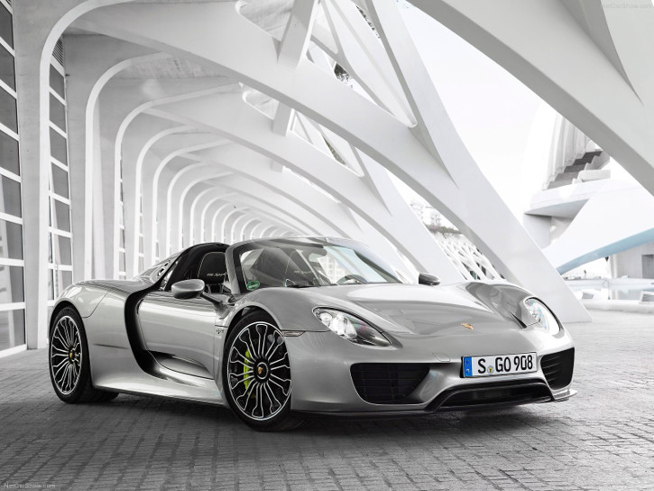

Porsche 918 Spyder
Specifications
Power: 887 hp @ 8600 rpm
Torque: 1280 Nm @ 5000 rpm
0 to 100 kph: 2.6 s
Top Speed: 340 kph
Weight: 1700 kg
/p>
Vehicle Type:
mid engine, front and mid motor, 4 wheel drive, 2 passenger, 2 door targa
Engine:
Type: (Hybrid) V8, dual electric motor
Displacement: 4600 cc
Power: 608 hp
Torque: 530 Nm
Front Motor:
Power:127 hp
Mid Motor:
Power:154 hp
Transmission: 7-speed dual clutch automatic with manual shifting mode
Price: $847,975
Related Links
Official site
More info @ wikipedia
Wallpapers
Youtube
Reviews
- 


{kind=link}
{kind=link}
{kind=link}
{kind=link}
{kind=link}
{kind=link}
{kind=link}
{kind=link}
{kind=link}
{kind=link}
{kind=link}
{kind=link}
{kind=link}
{kind=link}
{kind=link}
{kind=link}
{kind=link}
{kind=link}
{kind=link}
{kind=link}
The Porsche 918 Spyder embodies the essence of the Porsche idea, combining pedigree motor racing technology with excellent everyday suitability, and maximum performance with minimum consumption. The début of the 918 Spyder at the IAA 2013 marks the start of a new chapter in the future of the hybrid drive.
And the technology pioneers are not the only ones who are excited by this flagship project, as the 918 Spyder demonstrates the potential of the hybrid drive to a degree never seen before, achieving a parallel improvement in both fuel efficiency and performance without compromising on either. This is the idea that has made the Porsche 911 the most successful sportscar in the world for the past 50 years. In short, the 918 Spyder contains the genetic blueprint for the Porsche sportscar of the future.
The Porsche 918 Spyder has been greatly influenced by its affiliations with motorsport. A number of the developments to the Porsche race car for the 24 Hours of Le Mans 2014 were used in the 918 Spyder - and vice versa. The structural concept, which is based on a rolling chassis (i.e. a chassis without bodywork), is standard for Porsche race cars. The design of the V8 engine is based on that of the Le Mans Prototype 2 (LMP2) race car, the RS Spyder, and the supporting monocoque structures and unit carriers are made from carbon fibre reinforced plastic (CFRP). More importantly, however, the Porsche 918 Spyder is considerably more fuel efficient than any of its competitors. In fact, this plug-in hybrid combines the performance of a race car with an output of over 880 bhp with an estimated NEDC fuel consumption of just three litres per 100 km, which is lower than the majority of today's compact cars. Drivers can therefore enjoy maximum driving pleasure and minimum fuel consumption.
Hybrid drive enhances dynamic performance
The core message surrounding the 918 Spyder is that the Porsche hybrid drive offers uncompromising dynamic performance. The unique all-wheel drive concept with a combined combustion engine and electric motor drive system on the rear axle and a second electric motor on the front axle make this possible. This concept is based on Porsche's motorsport development work for the successful 911 GT3 R hybrid.
The additional, individually controllable front-wheel drive enables new driving strategies to be used for extremely high yet safe speeds through bends in particular. What's more, the advanced "boost" strategy manages the energy of the electric drive so intelligently that the unrestricted total power of the 918 Spyder can be accessed simply by fully depressing the accelerator pedal for every burst of speed at maximum acceleration. In short, the Porsche 918 Spyder allows even drivers without motorsport training to experience the potential of advanced longitudinal and lateral dynamics.
From comfortable to race-ready: Five modes for three motors
The centrepiece of the 918 Spyder concept is the distribution of propulsive power across three power units, all of which are integrated and controlled via an intelligent management system. To benefit as much as possible from the coverage offered by the different systems, the Porsche developers have defined a total of five operating modes, which can be activated via a map switch in the steering wheel, just like in race cars. Using the pre-selected mode, the 918 Spyder applies the most suitable operating and boost strategy without any further intervention from drivers, thus allowing them to concentrate fully on the road.
Quiet and elegant: "E-Power"
When the vehicle is started up, "E-Power" mode is selected as the default operating mode, provided that the battery is sufficiently charged. Depending on load, the 918 Spyder can cover between 16 and 32 kilometres on purely electric power. Even in pure electric mode, the Porsche 918 Spyder accelerates from 0 to 100 km/h in under seven seconds and can reach speeds of up to 150 km/h. In this mode, the combustion engine is used only when needed. If the battery charging condition drops below a set minimum level, the vehicle automatically switches to hybrid mode.
Efficient and comfortable: "Hybrid"
In "Hybrid" mode, the electric motors and combustion engine work alternately, focusing on achieving maximum efficiency and minimum fuel consumption. The power output of the individual drive components is modified in line with the current driving situation and the required performance level. Hybrid mode is typically used for fuel-efficient driving.
Sporty and dynamic: "Sport Hybrid"
If a more dynamic performance is required, the power units in the 918 Spyder switch over to "Sport Hybrid" mode. The combustion engine now operates continuously, representing the main propulsive force. The electric motors are activated to support acceleration through the electric boost function, or at points when the operating point of the combustion engine can be optimised for greater efficiency. This mode focuses on performance and a sporty driving experience at top speeds.
For fast laps: "Race Hybrid"
"Race Hybrid" is the mode for maximum performance combined with an especially sporty driving experience. The combustion engine is chiefly used under high load, and charges the battery whenever the driver does not require maximum power. The electric motors provide additional support in the form of boosting in this mode too. The gearshift programme of the Porsche Doppelkupplung (PDK) is also designed for even sportier driving. The electric motors are used up to the maximum power output limit to deliver the best possible performance for the race track. In this mode, the battery charging condition is not kept constant and instead fluctuates over the entire charge range. In contrast to Sport Hybrid mode, the electric motors run at their maximum power output limit for a short period for enhanced boost performance. This increased output is balanced out by the fact that the combustion engine charges the battery more intensively. The electric power boost is thus always available to the driver even for several very fast laps.
For pole position: "Hot Lap"
The "Hot Lap" button in the centre of the map switch releases the 918 Spyder's final reserves and can only be activated in "Race Hybrid" mode. Similar to a qualification mode, "Race Hybrid" mode pushes the traction battery to its maximum power output limits for a few fast laps. This mode uses all of the available energy in the battery.
A drive that harnesses the power of three separate power units
The main drive source is the 4.6-litre, eight-cylinder engine with an output of up to 608 bhp. Based on the power unit of the successful RS Spyder endurance race car, the engine delivers engine speeds of up to 9150 rpm and a power output per litre of approx. 132 bhp/litre - 26 bhp/litre more than that of the Carrera GT, making this the highest specific power of any naturally aspirated Porsche engine.
And it is not just the performance of the 918 Spyder engine that stirs up an emotive response: The sound of this vehicle is just as impressive, and can primarily be attributed to the "top pipes" - exhaust tailpipes that terminate directly above the engine in the upper part of the rear end. No other series production vehicle features this solution.
In parallel in the drivetrain: Hybrid module
The V8 engine is coupled to the hybrid module as the Porsche 918 Spyder is designed as a parallel hybrid like Porsche's current hybrid models. The hybrid module essentially comprises a 115-kW electric motor and a decoupler that serves as the connection with the combustion engine. Because of its parallel hybrid configuration, the 918 Spyder can be powered at the rear axle either individually by the combustion engine or the electric motor, or via both drives together. As is typical for a Porsche super sportscar, the power unit assembly in the 918 Spyder has been placed in front of the rear axle, and it does not have a direct mechanical connection to the front axle. A seven-speed Porsche Doppelkupplung (PDK) transmission handles power transmission to the rear axle.
Independent all-wheel drive: Front axle with electric motor
There is another independent electric motor that generates approximately 95 kW of power at the front axle. The front electric drive unit drives the wheels at a fixed gear ratio. A decoupler decouples the electric motor at high speeds to prevent the motor from over-revving. The drive torque is independently controlled for each axle, creating a very responsive all-wheel drive function with significant potential in terms of traction and dynamic performance.
Lithium-ion battery with plug-in charging system
The electric energy for the electric motors is stored by a liquid-cooled lithium-ion battery comprising 312 individual cells with an energy content of approximately seven kilowatt hours. The battery in the Porsche 918 Spyder has a performance-oriented design in terms of both power charging and output, enabling it to meet the performance requirements of the electric motor. The power capacity and operating life of the lithium-ion traction battery depend on several factors, including thermal conditions. This is why the 918 Spyder's battery is liquid cooled by a dedicated cooling circuit. The global warranty period for the traction battery is seven years.
Porsche has developed a new system with a plug-in charging interface and improved recuperation potential for charging the battery. For example, on the German 230 Volt mains supply, the traction battery can be charged within four hours by connecting the Porsche Universal Charger (AC) provided in the scope of delivery to a ten-ampere fused power socket. The Porsche Speed Charging Station (DC) is also available as an option, and will fully charge the high-voltage battery in just under 25 minutes.
Chassis with race car genes and rear-axle steering
The Porsche 918 Spyder's multi-link chassis was inspired by motorsport design, and is complemented by additional systems such as the Porsche Active Suspension Management (PASM) adaptive shock-absorber system and rear-axle steering, which is essentially an electro-mechanical adjustment system at each rear wheel. This adjustment is speed-sensitive, providing steering angles of up to three degrees in each direction.
The rear axle can therefore be steered in the same direction or in the opposite direction to the front wheels. At low speeds, the system steers the rear wheels in the opposite direction to the front wheels, which has the effect of shortening the wheelbase. This makes cornering even more direct, faster and more precise, and reduces the turning circle. At higher speeds, the system steers the rear wheels in the same direction as the front wheels, which has the effect of lengthening the wheelbase. This significantly increases rear end stability when changing lanes quickly, resulting in exceptionally safe and stable handling.
The tyres of the 918: A special challenge
On the one hand, the tyres needed to have optimum grip and razor-sharp handling on all road types. On the other hand, the tyres needed to be durable on the racetrack and have as low a rolling resistance as possible. As a result, the developers of the Michelin Pilot Sport Cup 2 tyres for the Porsche 918 Spyder were faced with a seemingly insurmountable conflict of objectives. However, working closely with Porsche engineers, the tyre experts from Michelin were able to overcome this challenge in impressive fashion: The 918 Spyder is rolling out of production facilities exclusively on specially tuned Michelin Pilot Sport Cup 2 tyres. A total of 550 prototype tyres were produced and tested over the course of the testing period. 400 preproduction prototypes and 200 series test specimens were also produced before Porsche gave the final approval for the Michelin Pilot Sport Cup 2 tyres in size 265/35 ZR 20 for the front axle and 325/30 ZR 21 for the rear axle. The tyres developed specially for the Porsche 918 are also raising the benchmark in the ultra sports tyre segment when it comes to driving on wet surfaces and in terms of aquaplaning safety. The Porsche 918 sees this exclusive partnership between Michelin and Porsche in the development of special tyres for super sportscars entering its second phase. This partnership started more than ten years ago with the Carrera GT.
The Weissach package for an even better performance
For customers looking for an even better performance from the 918 Spyder, Porsche also offers the "Weissach" package. Super sportscars modified with this package are also available in special colours and designs inspired by legendary Porsche race cars, making them instantly recognisable. The emphasis on performance is not just visual: Super lightweight magnesium wheels reduce the unsprung weight, decreasing the gross weight by around 35 kg. These lightweight features are decisive when it comes to further enhancing the dynamic performance of the vehicle. Other references to motorsport include six-point seatbelts for the driver and front passenger, an optional film coating instead of a paint finish, plus additional aerodynamic add-on parts in visible carbon fibre.
Porsche Active Aerodynamic (PAA) for different driving modes
Porsche Active Aerodynamic (PAA) is a system of adjustable aerodynamic elements that provides a unique and variable aerodynamic response. The system works in three stages, switching automatically between optimum efficiency and maximum downforce, and working in harmony with the operating modes of the hybrid drive.
In "Race" mode, the retractable rear wing is set to a steep angle to generate high downforce at the rear axle. The spoiler, which is positioned between the two wing supports at the trailing edge of the airflow, also extends. Two adjustable air flaps are opened in the underbody in front of the front axle, directing some of the air into the diffuser channels of the underbody structure to also produce a "ground effect" at the front axle.
In "Sport" mode, the aerodynamics control system reduces the approach angle of the rear wing slightly, enabling a higher top speed. The spoiler remains extended but the aerodynamic flaps in the underbody close, which also reduces aerodynamic drag and increases the potential vehicle speed. In "E" mode, the system focuses solely on low aerodynamic drag; the rear wing and spoiler are retracted and the underbody flaps are closed. Adjustable air intakes under the main headlights round off the adaptive aerodynamics system. When the vehicle is stationary and in "Race" or "Sport" mode, the intakes are opened to enable maximum cooling. In "E-Power" and "Hybrid" mode, the air intakes close as soon as the vehicle is driven off in order to keep aerodynamic drag to a minimum. They are not opened again until the vehicle reaches speeds of approximately 130 km/h or when cooling requirements are higher.
Clear organisation in the cockpit
The driver is the focus behind all the technology in the future Porsche super sportscar. With this in mind, the engineers have developed a cockpit that is typical of the brand and pioneering in its clarity. The cockpit concept is divided into two basic sections: The first section comprises the controls that are important for driving. These items are grouped around the multi-function steering wheel and combined with driver information displayed on three large round instruments. The second section comprises the infotainment block housed in the elevated centre console, which was originally introduced in the Carrera GT.
Systems like climate control, wing adjustment, lighting and the Porsche Communication Management (PCM) system along with the Burmester High-End sound system can be operated intuitively via the multi-touch control functions on the innovative black panel display.
A unique open-roof driving experience: Removable roof panels
As a super sportscar designed for everyday use, the Porsche 918 Spyder offers a spectacular top-down driving experience. The two roof panels made from carbon fibre-reinforced plastic (CFRP) are removable, as is the tradition at Porsche, and can be stored securely in the 100-litre luggage compartment located at the front of the vehicle.
Porsche redefined: A new super sportscar for a new decade
The 918 Spyder continues a long tradition of super sportscars at Porsche. Many of these vehicles have set technological benchmarks and have become the ultimate sportscars of their decades: the Carrera GTS, the first Porsche Turbo, the 959, the 911 GT1 and the Carrera GT. More so than any of its predecessors, the 918 Spyder is providing the key momentum for developing technologies for future vehicle concepts. The Porsche 918 Spyder features all the components that reflect the Porsche DNA in a format that is more powerful than ever before.